Подготовка кастомной клавиатуры#
В этом руководстве не рассматриваются настройки экспорта вашего CAD-софта: сначала экспортируйте дизайн в OBJ или FBX, затем импортируйте в Blender. Альтернативный вариант — использовать плагин Stepper для Blender, который импортирует файлы STEP/STP напрямую.
Здесь в качестве примера взят файл рендера Alchemist Keyboards Aella, преобразованный в OBJ. Правый клик — Сохранить как

Создайте новый файл Blender, нажмите A X D, чтобы удалить содержимое по умолчанию (куб, камеру, свет), затем на вкладке Scene Properties (Свойства сцены) панели свойств установите единицы измерения в миллиметры (millimeters).

Теперь импортируйте OBJ-файл Aella: File > Import > Wavefront Obj (F4 I W).
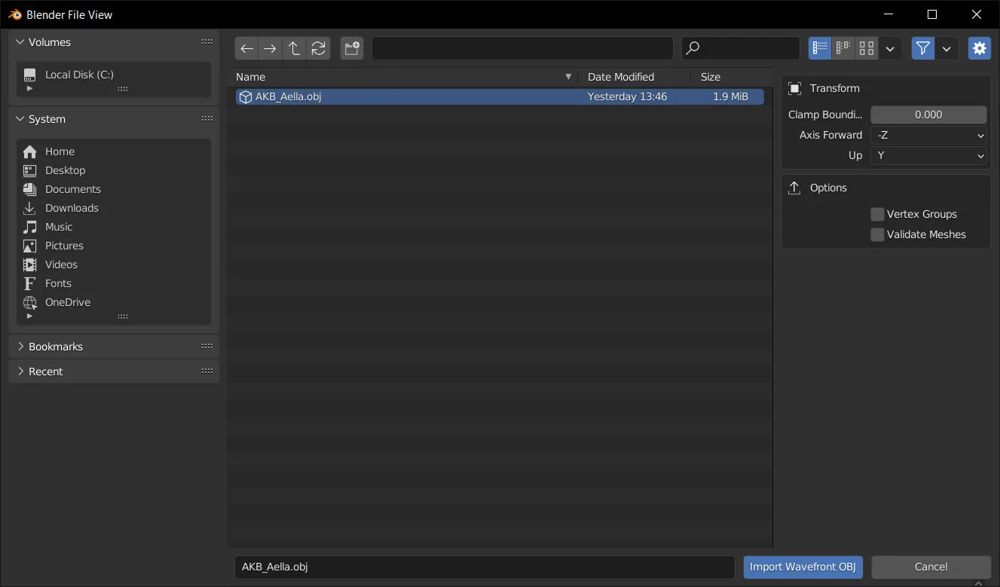
Вы сразу заметите, что масштаб неверный — здесь миллиметры были импортированы как метры.
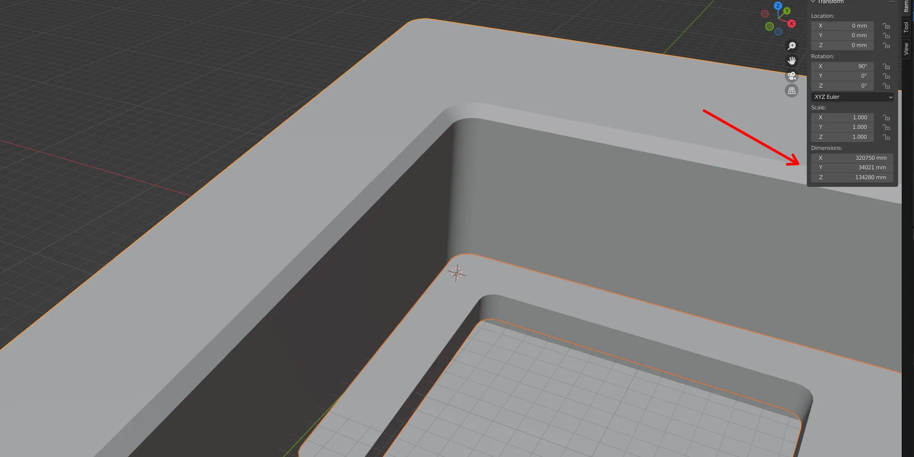
Нажмите S 0.001, чтобы уменьшить клавиатуру в тысячу раз. После масштабирования она может стать невидимой — нажмите Home, чтобы снова вписать её в вид.

Теперь примените масштаб и поворот: нажмите Ctrl+A, затем ещё раз A и выберите All Transforms (Применить всё).
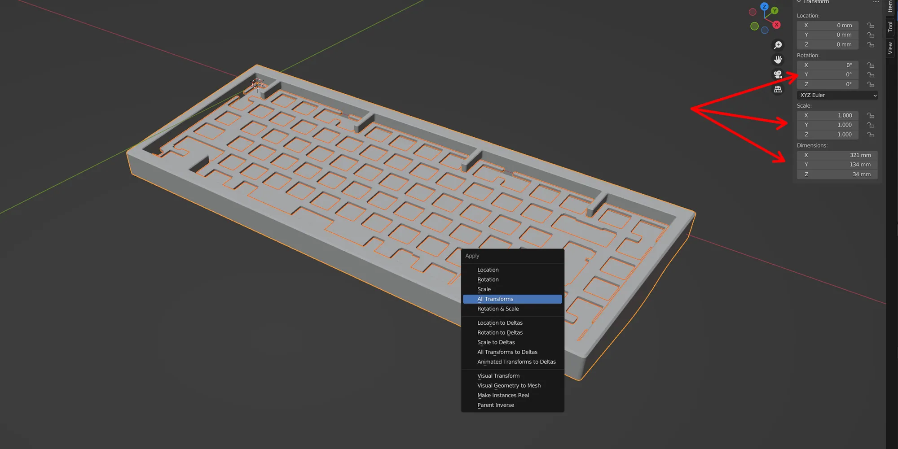
Далее создайте ручку перемещения: Add > Mesh > Plane (Shift+A M P).

Зажмите Shift и кликните по нижней части корпуса клавиатуры, чтобы добавить её в выделение, затем выровняйте плоскость через Object > Transform > Align Objects: в диалоге зажмите Shift и выберите обе оси — X и Y.
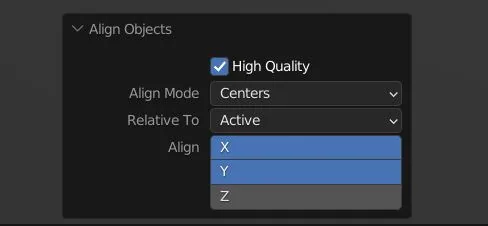
Повторите Align Objects ещё раз, на этот раз установив Align Mode в Negative Sides (Отрицательные стороны) и выбрав ось Z.
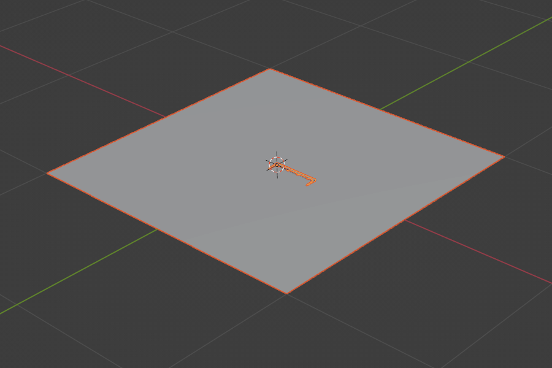
Когда плоскость расположена правильно, отмасштабируйте её так, чтобы она была немного больше нижней поверхности клавиатуры (S X, затем S Y), и примените масштаб.
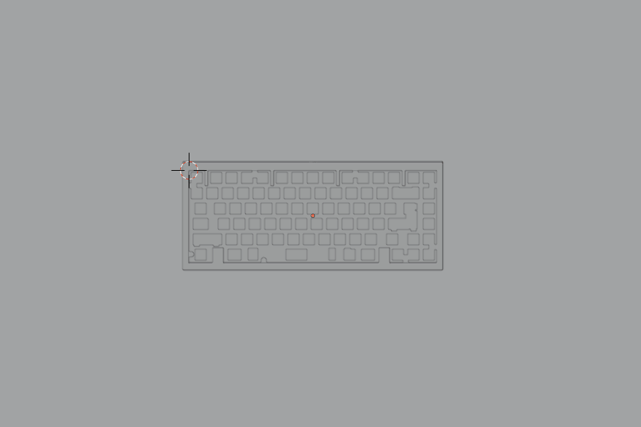
Преобразуйте её в кривую через Object > Convert > Curve. Ручка перемещения готова.

Сделайте все объекты клавиатуры дочерними для этой ручки перемещения: оставив ручку выделенной, нажмите A для выделения всего, затем Ctrl+P > Object (Keep Transform). Теперь при перемещении ручки остальные части будут двигаться вместе с ней. Нажмите Alt+G, чтобы очистить положение и сбросить ручку и все её дочерние объекты в начало мировых координат.

Теперь импортируйте раскладку кейкапов, здесь используется раскладка 75%: нажмите File > Append, перейдите к файлу KRK201 и откройте его двойным щелчком (blend-файл ведёт себя как папка), войдите в Collections, найдите 75 и добавьте коллекцию 75.

Возможно, вам также потребуется включить видимость этой коллекции во вьюпорте: в структуре (Outliner) откройте фильтр отключения видимости вьюпорта (viewport disable filter) и поставьте галочку для коллекции 75.
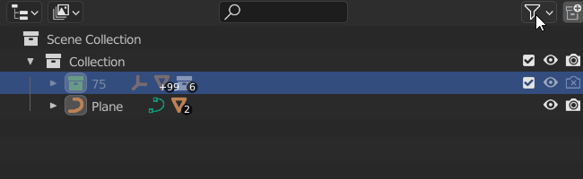
Выделите ручку перемещения, входящую в раскладку (пустой объект в форме креста), расположите раскладку в нужном месте относительно основной зоны (Alphas), затем поверните её на 7 градусов по оси X (это угол наклона Aella).
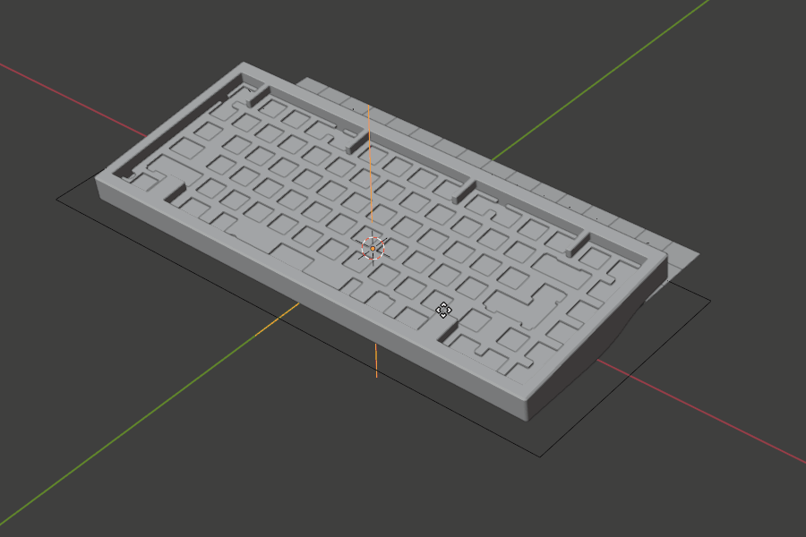
Сделайте ручку перемещения раскладки дочерней для ручки перемещения клавиатуры.
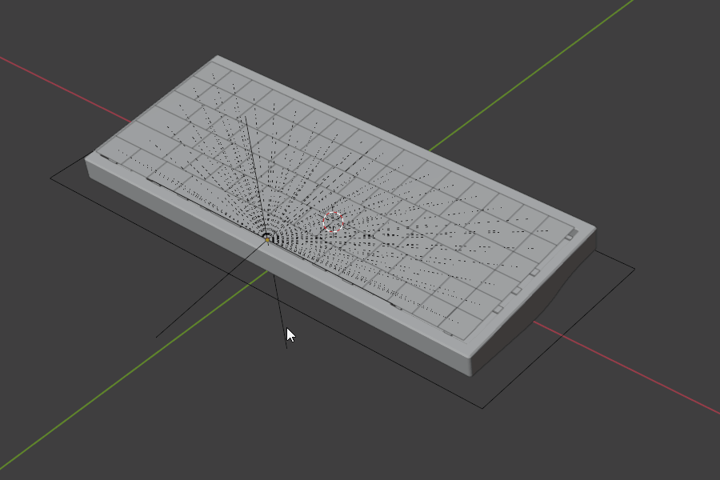
Плейсхолдеры нужно перемещать по одному, чтобы выровнять их по раскладке клавиатуры. Введите 0.002381 в grid size (размер сетки), чтобы задать шаг привязки в 1/8 единицы.
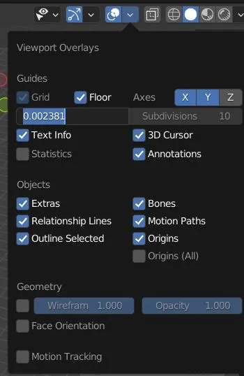
Откройте нижний ряд Tsangan.
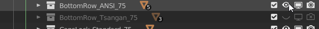
Выделите плейсхолдеры, которые нужно переместить, и перемещайте их с ограничением по оси: G X — по оси X, G YY — по локальной оси Y, и так далее. Клавишу Win нужно удалить, а клавишу Alt скопировать с левой клавиши через связывание (Ctrl+L, затем O). Зажмите Ctrl или нажмите значок магнита, чтобы включить привязку, — тогда шаг привязки начнёт действовать.

Теперь клавиатура готова и совместима с KRK2. Сохраните её как сжатый blend-файл для распространения, а затем импортируйте в KRK2.